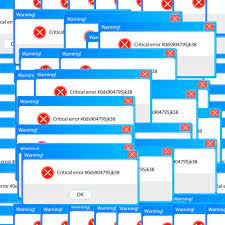

(But not really, it's just a harmless demonstration!)
The history of malware is long and varied. The term malware includes any software intentionally designed to cause damage to a computer, server, client, or computer network.
The first known malware, the "Creeper" virus, was an experimental self-duplicating program written in 1971. It was not malicious, but it paved the way for the malware that would follow.
In 1982, the "Elk Cloner" virus became the first known virus to spread in the wild. It infected Apple II computers via floppy disk.
With the growth of the internet in the late 1980s and 1990s, malware like the "Morris worm" and "ILOVEYOU" virus spread widely and caused significant damage.
Today, malware includes viruses, worms, trojans, ransomware, spyware, adware, and more. Each of these types of malware has its own history and ways of causing damage.
